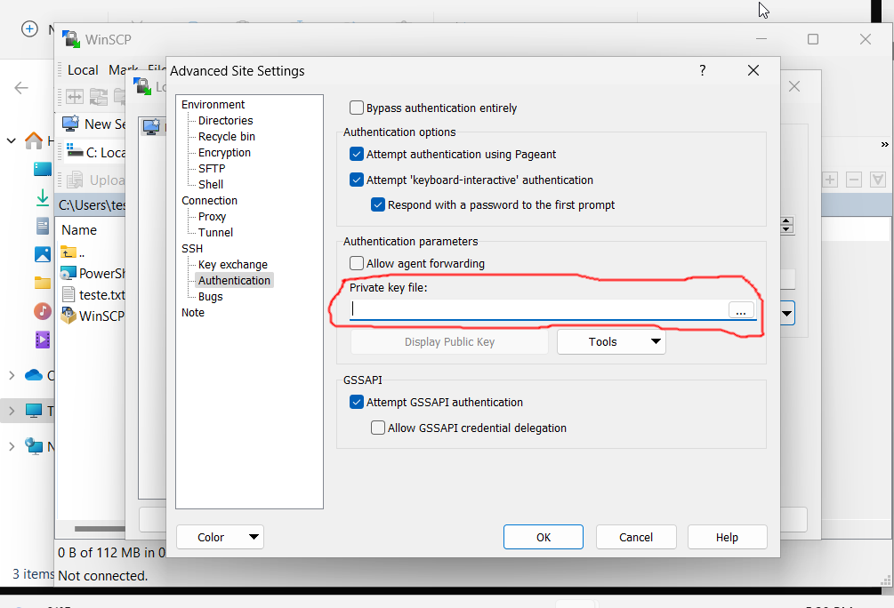
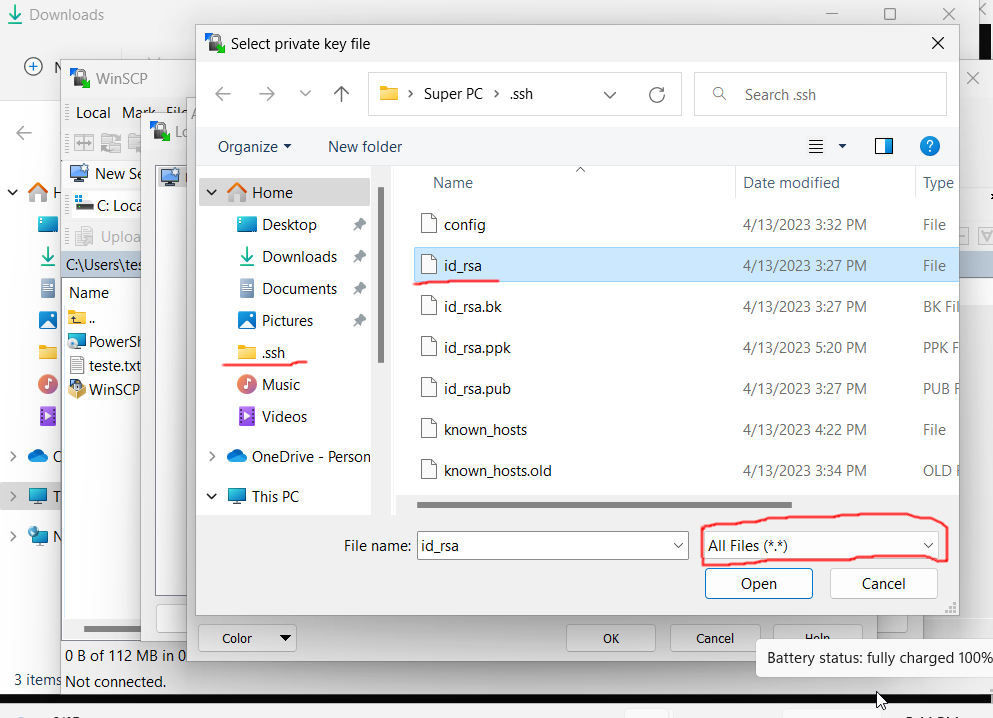
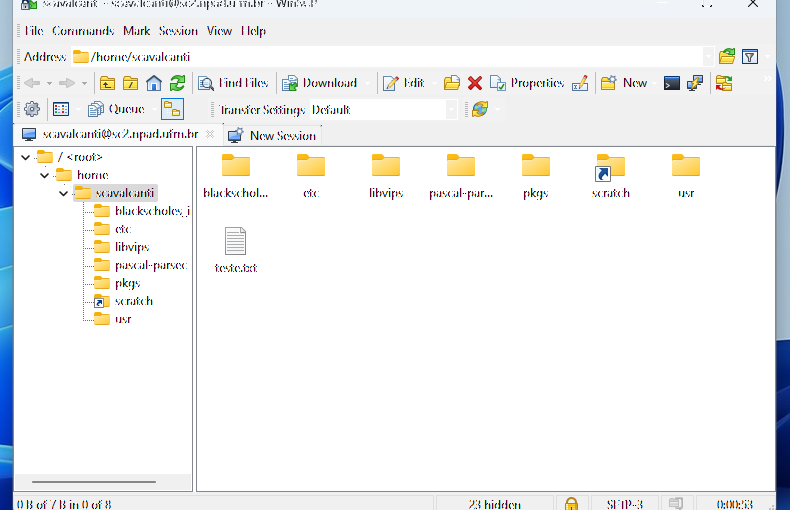

Copiando arquivos através de uma interface gráfica WinSCP (Windows)¶
Ao contrário do linux, o windows explorer não possui suporte ao scp, tendo que fazer uso de um programa de terceiros chamado WinSCP. Para instalar o WinSCP vá no site oficial e clique em Download. Após a finalização do download, clique no executável e instale a aplicação. Ao executar a aplicação irá aparecer a seguinte interface:

-
HostName coloque: sc2.npad.ufrn.br
-
Port number coloque 4422
-
User name coloque o seu nome de usuário
-
IMPORTANTE: deixe o campo Password vazio
Depois clique em Advanced...

Em Advanced, vá em Authentication, um submenu de SSH. Procure por Private key file e clique nos três pontinhos (...). Agora você precisa procurar a chave privada que foi criada anteriormente, no meu caso o nome dela é id_rsa.

PuTTy¶
Caso você esteja utilizando o Putty vá onde você salvou a chave privada pelo PuttyGen.
OpenSSH + Windows PowerShell¶
Caso você tenha esteja usando OpenSSH e Windows PowerShell e não tenha mudado o nome da chave, o caminho até a chave privada é C:\Users\NomeDoSeuUsuário\.ssh\id_rsa. Para visualiza-lá terá que selecionar a opção: todos os tipos de arquivo.
MobaXterm¶
No caso em que você esteja usando o MobaXterm, saiba que o local padrão em que o MobaXterm salva as chaves é C:\Users\NomeDoSeuUsuário\AppData\Roaming\MobaXterm\home\.ssh. Para visualizar a chave terá que selecionar a opção: todos os tipos de arquivo.
Se tudo der certo o WinSCP irá pedir para converter a Chave em formato OpenSSH para um formado PuTTY caso precise. Concorde, converta, salve e saída das configurações avançadas através do botão OK. Quando você pressionar o botão Login. Você terá acesso ao seu sistema de arquivos do supercomputador. O WinSCP irá parecer como uma dessas duas telas dependendo do layout escolhido durante a instalação.


Informações extras sobre a aplicação utilizada¶
- WinSCP: winscp docs